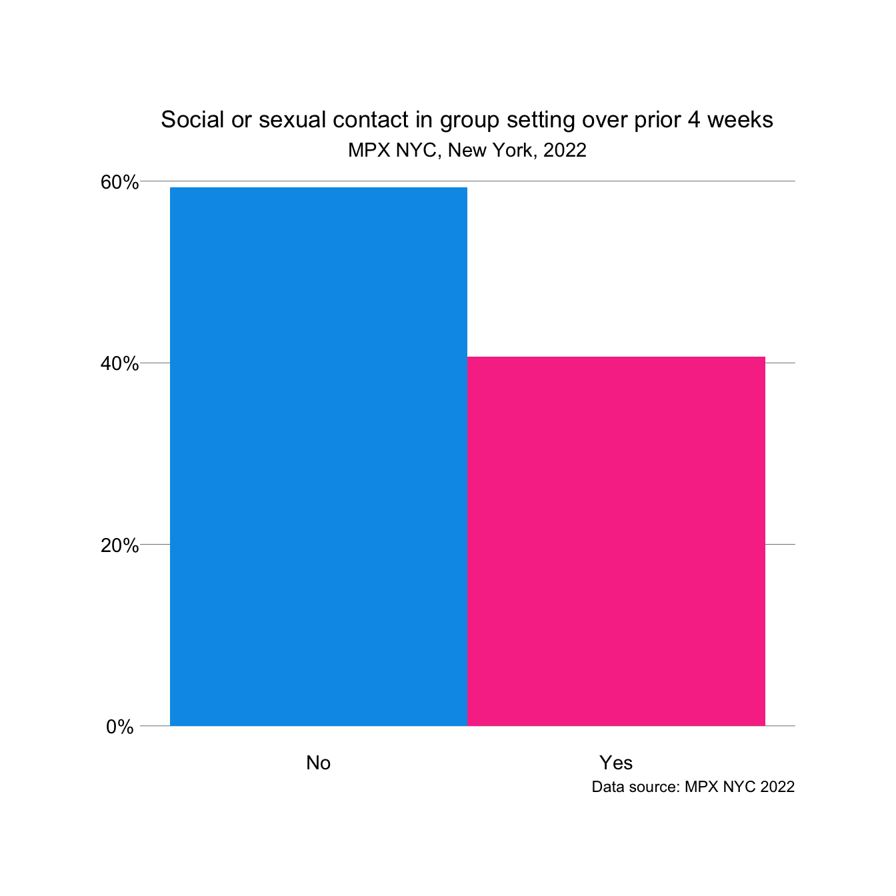
Manuscript: MPX NYC Intervention Strategy
Key Messages
Message 1: Usual interventions miss the mark
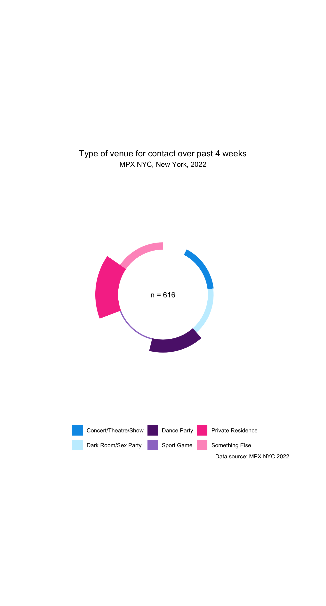
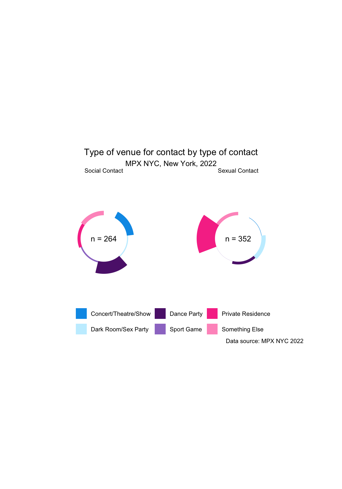
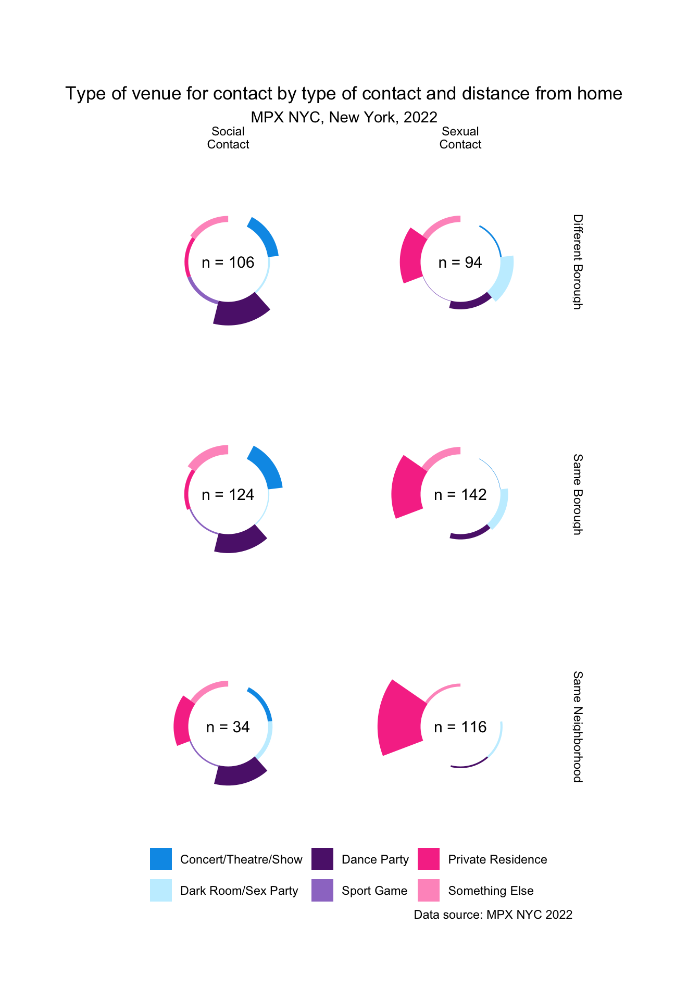
Message 2: It is possible to target geographically
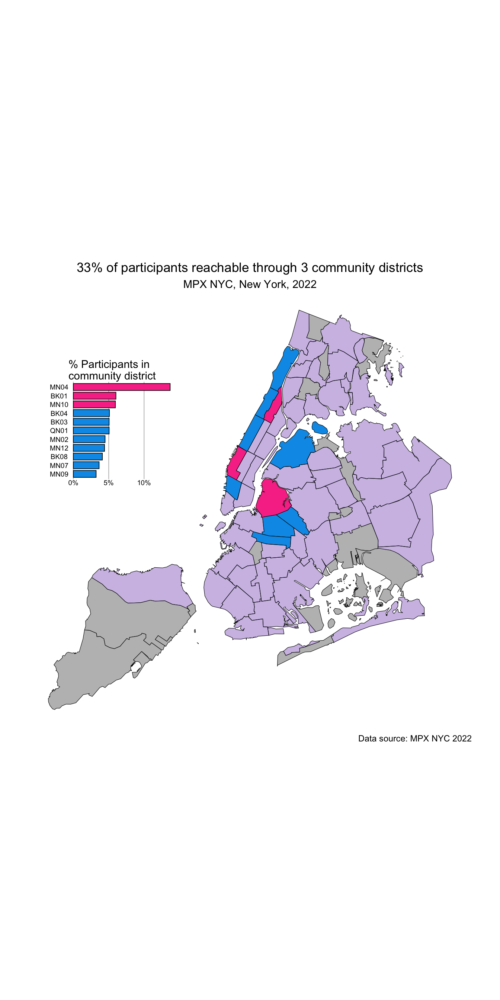
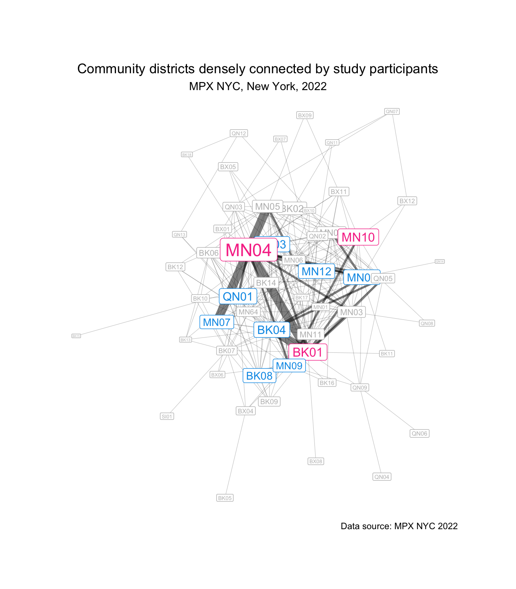
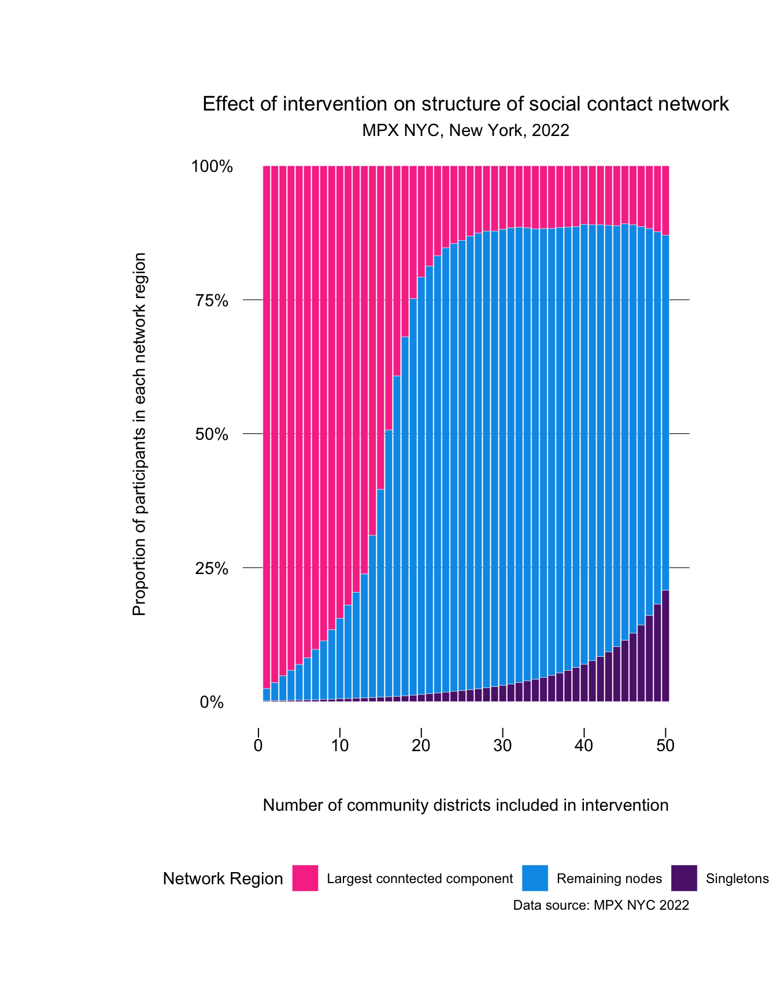
Message 3: It is possible to mitigate health disparities
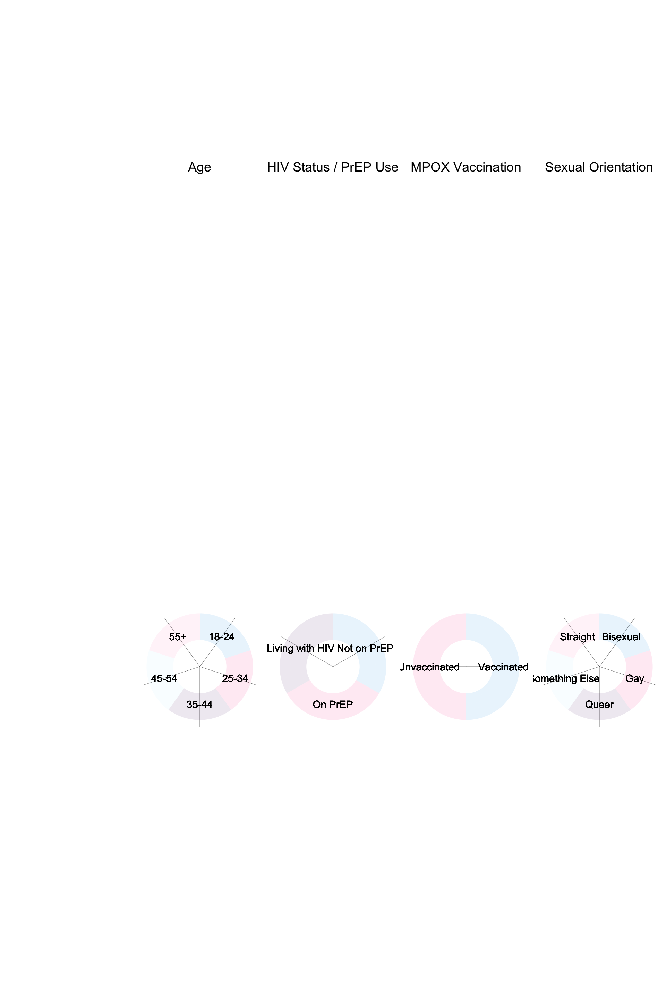
Message 4: About the Study
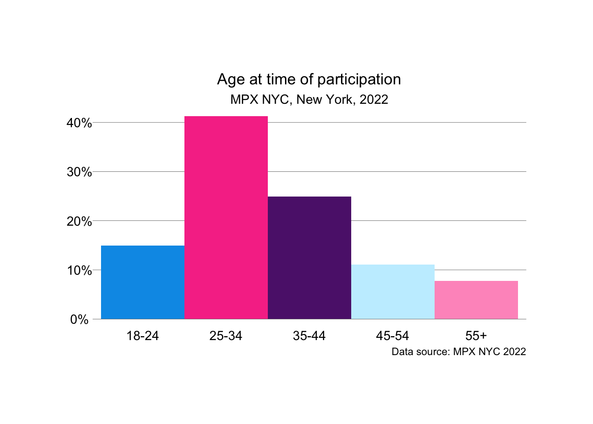
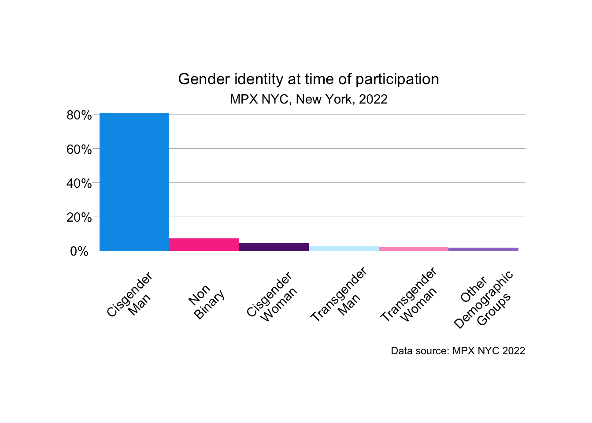
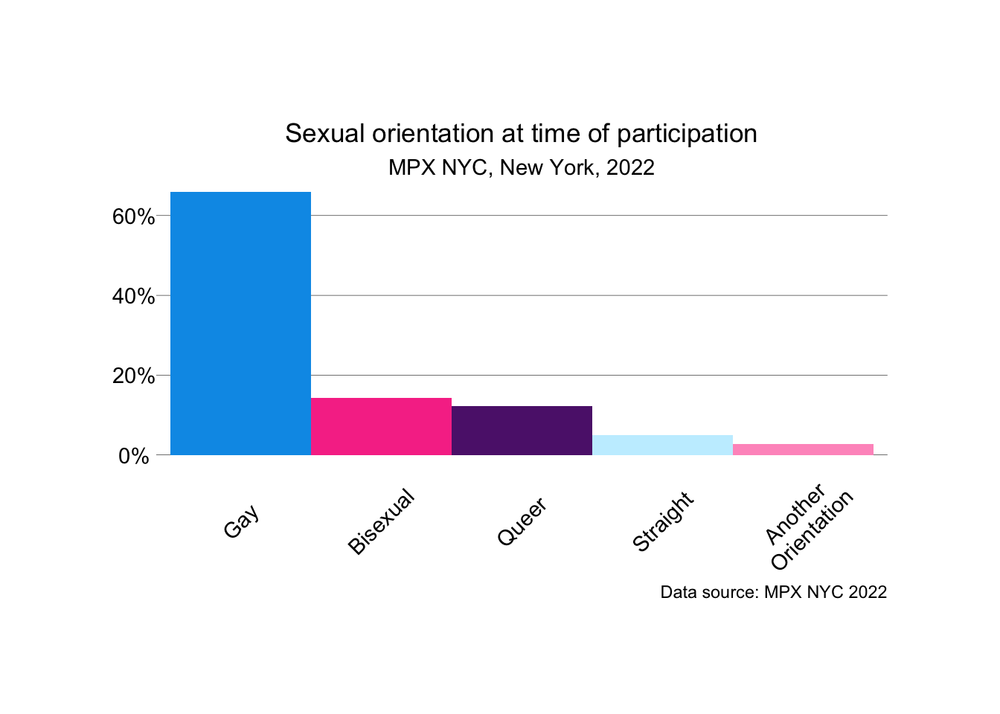
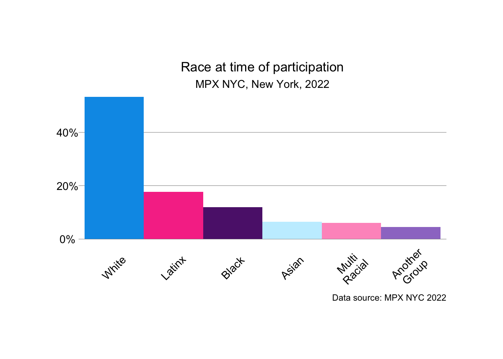
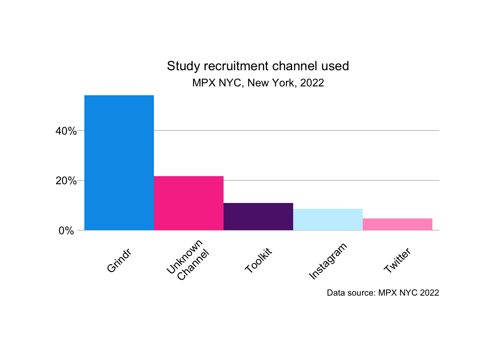
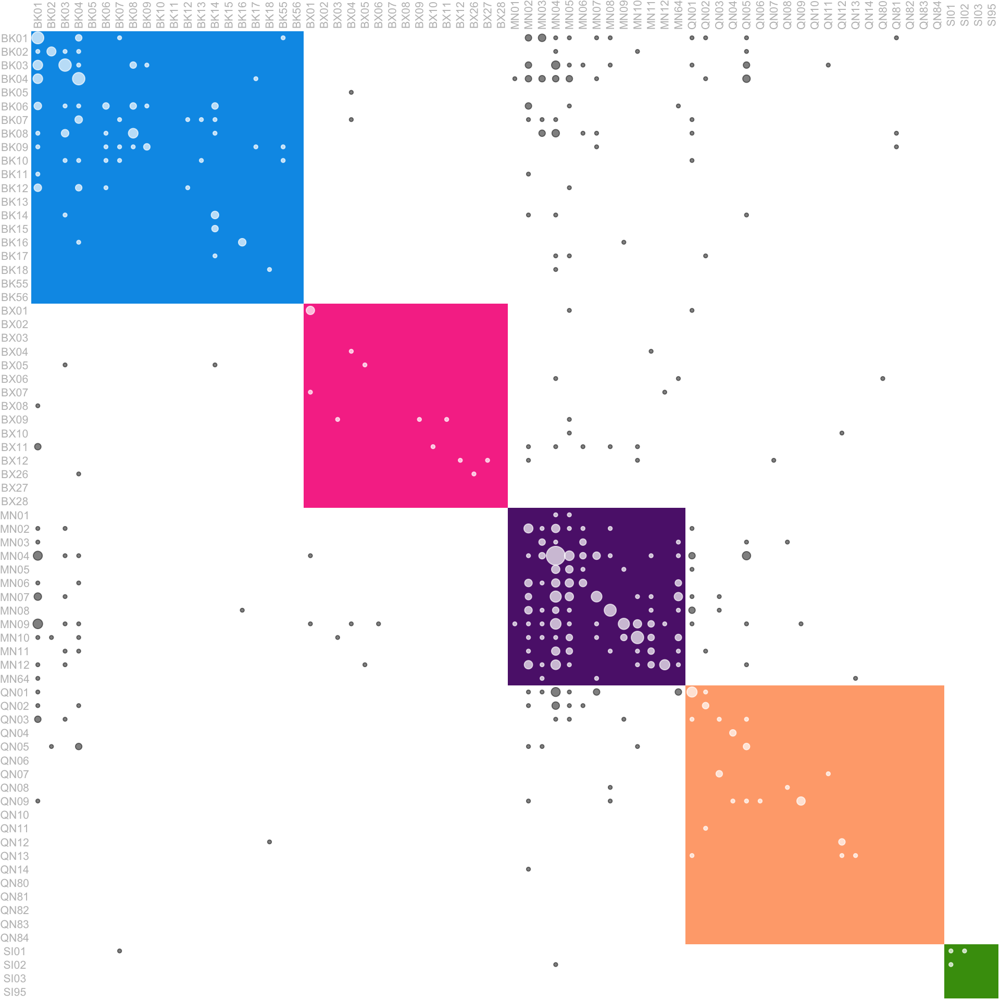